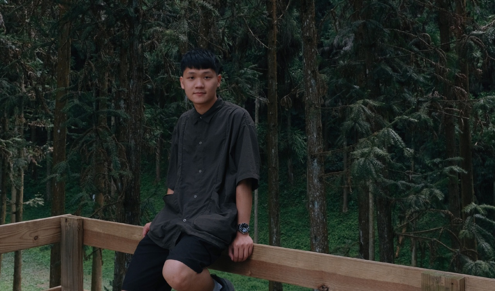
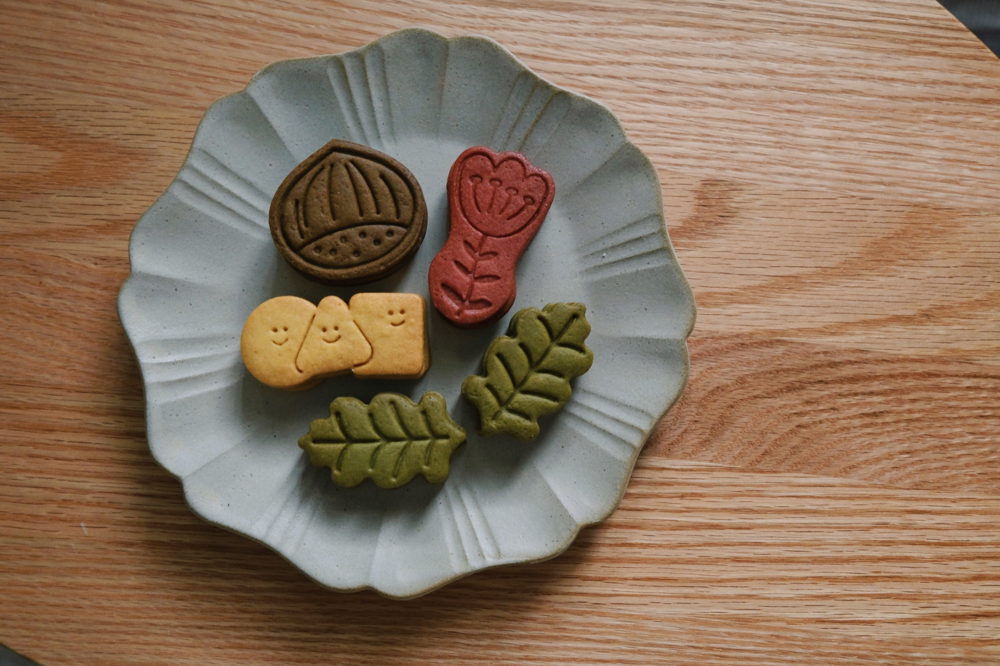

哩賀，我是李東穎，專注於網頁設計及前端開發
Hello, I‘m Dean,Foucs on web design and font-end devlop。

About me
因為視差滾動，吸引我進入網頁設計這個廣大的世界
從電機系跨領域，學習一直有很興趣的設計產業，
喜歡幽默、美麗，創意的事物，也很期待和強者學習創造出耳目一新的產品。
處此之外，我也喜歡彈吉他、滑滑板、烹飪料理、股票投資...
more
Work

餅乾生產餡-官方網站
Web,UI/UX Design,Development,2022
餅乾生產餡-官方網站
Web,UI/UX Design,Development,2022